ELI5 Skill 使用指南：让 Claude Code 把复杂知识画给你看
大家好，我是小林。
这几天，我刷到 Anthropic 工程师 Thariq 发了一条推文，说他们公司内部最近有不少人在用一个叫 ELI5 的 Skill。
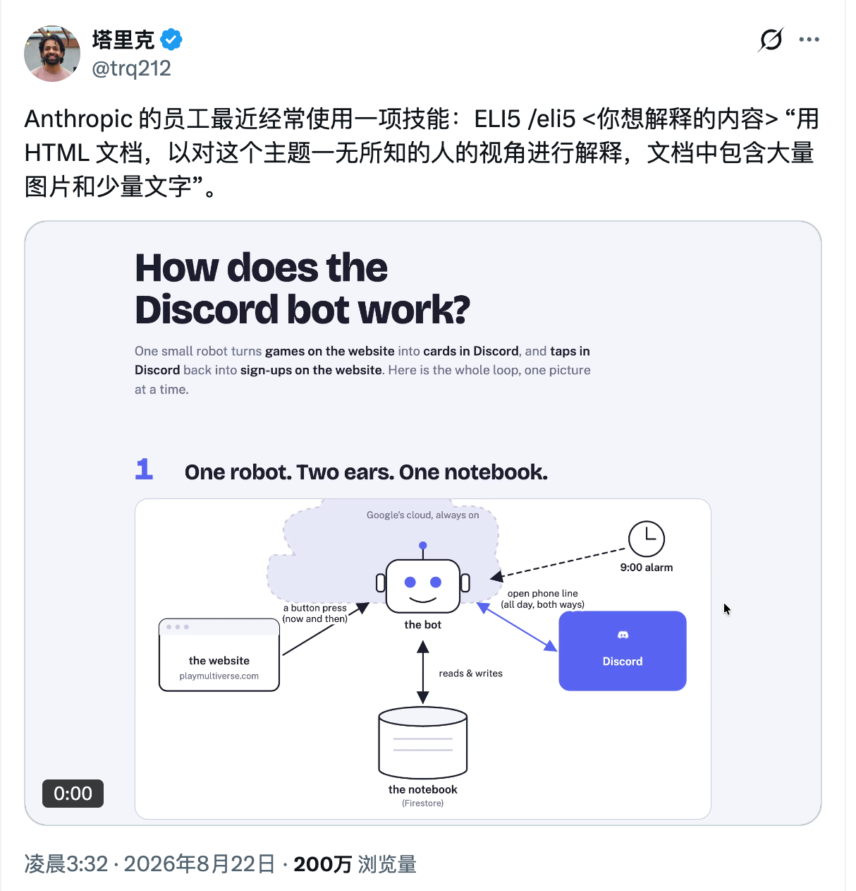
ELI5 是「Explain Like I’m 5」的缩写。你可以理解成，不管这个话题有多复杂，都先把我当成一个完全不了解的人来讲。
它的用法很直接。在 Claude Code 里输入 /eli5，后面跟上你想了解的东西。
/eli5 Agent 是什么？怎么工作的？
AI 会生成一个 HTML 页面，用大图配上很少的文字，把 Agent 的工作方式画给你看。
看起来有点像技术版的儿童绘本。
以后碰到一个陌生话题，不想一上来就啃大段资料，可以先丢给 ELI5，让它帮你把大概脉络画出来。
我当时就挺好奇，这么好用的 Skill，里面到底塞了多少提示词，才能让 AI 稳定做出这种页面？
结果点开 GitHub 一看，整个 Skill 的核心只有一句提示词。
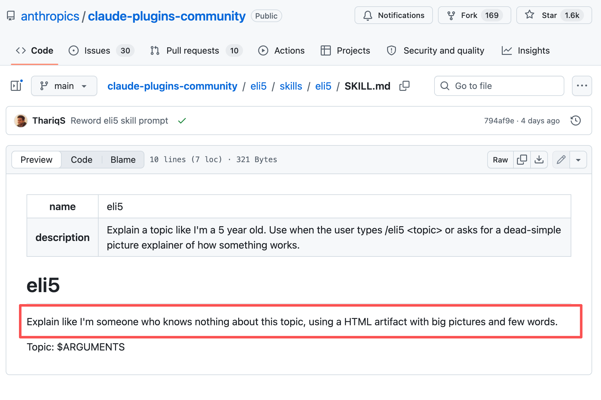
我还以为页面没加载完整，顺手刷新了几次。
还是只有这一句。
这个 Skill 到底写了什么？
ELI5 的 SKILL.md 只有 321 字节，去掉开头的名字和触发说明，正文只有下面这句话。
Explain like I'm someone who knows nothing about this topic,
using a HTML artifact with big pictures and few words.
Topic: $ARGUMENTS
翻译过来很简单，把我当成一个对这个主题完全不了解的人，用大图和少量文字，做成一个 HTML 页面讲给我看。
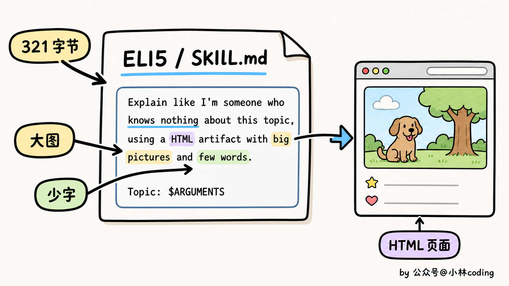
整个 Skill 的工作全交给这一句话。页面该分成几块、画什么图、用什么颜色，Claude 自己判断。
这也是我觉得它有意思的地方。ELI5 没有教 AI 怎么写网页，模型本来就会。这句提示词只定了三个要求，默认你从零开始，内容要可视化，文字尽量少。
就这么一句提示词，AI 的回答就从大段文字变成了大图少字的网页。
怎么安装和使用 ELI5？
如果你想把 ELI5 装到 Claude Code 里，先添加 Anthropic 的社区插件市场，再安装这个 Skill。
claude plugin marketplace add anthropics/claude-plugins-community
claude plugin install eli5@claude-community
不过，ELI5 并不是 Claude Code 专属。它本质上就是一份 SKILL.md，所以也是可以安装到 Codex、WorkBuddy 等 Agent 里的。
安装的方式也很简单，直接丢个这个提示词就搞定了。
https://github.com/anthropics/claude-plugins-community/blob/main/eli5/skills/eli5/SKILL.md 帮我装这个 skill
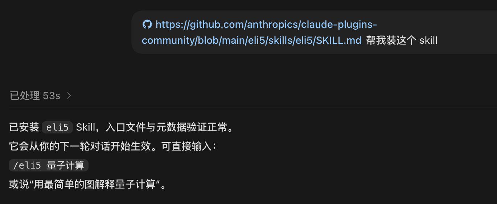
装好之后，不管你用 Claude Code、Codex 还是 WorkBuddy，调用方式都一样。
你想学习一个陌生的知识，直接这样问题就可以：
/eli5 DNS是怎么工作的？
你还可以拿它理解陌生项目、技术取舍和事故原因，帮助你快速熟悉一个项目。
/eli5 这个项目是怎么工作的
/eli5 为什么要做这个技术取舍
/eli5 是什么导致了这次事故
实测 ELI5 的效果
最近 DeepSeek V4 Flash 和 Pro 正式版出来后，很多人都在讨论它们比预览版强了多少。讨论里经常出现一个词，「后训练」。
后训练到底是什么？
如果直接搜资料，大概率又是一堆术语。我把这个问题丢给 ELI5，让它用最简单的方法教我。
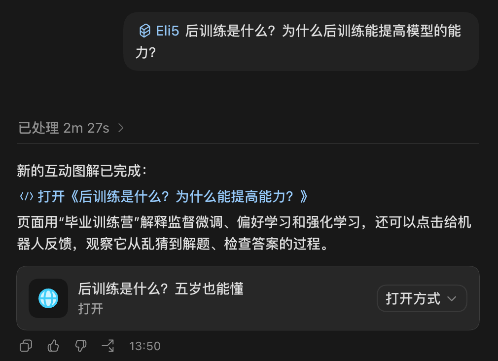
它直接做了一个可以交互的图文网页。
我觉得它讲得挺顺。大模型完成预训练之后，还要针对回答、推理这些能力做专项练习，这个过程就是后训练。
那同一个模型，为什么练完之后会变强？
它用了一个很好懂的说法，「知道」不等于「会做」。
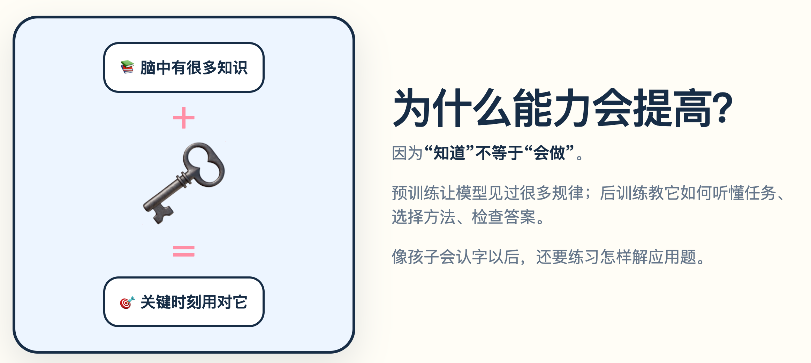
光解释还不够，网页里还做了一套互动演示，让你一步步看模型是怎么练出来的。
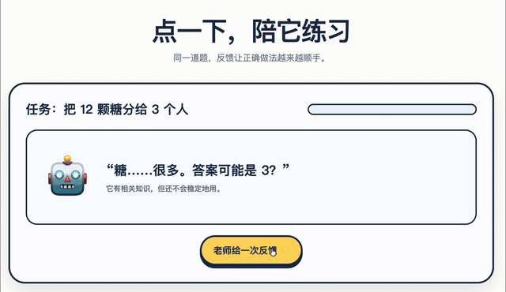
我又试了一下，不用 ELI5，直接问 AI 同样的问题。
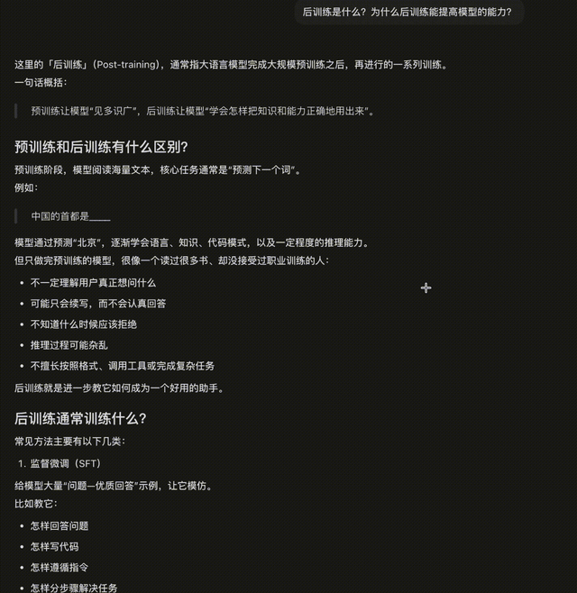
结果又回到了熟悉的长篇文字，信息全堆在一起，读起来确实更累。
放在一起看，ELI5 的优势就很直观了。它会先用图把关系讲清楚，再带着你一点点往下理解。
对了，很多林友跟我吐槽，Agent 开发里全是新名词，刚弄懂一个，又冒出来三个，学起来真的很累。
这种时候，ELI5 就挺好用。
比如你想知道「RAG 是怎么工作的」，直接把问题丢给它。
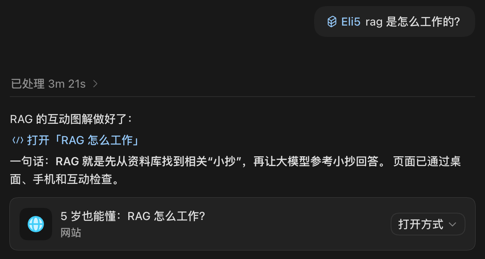
最后出来的是这样的，讲解很清楚。
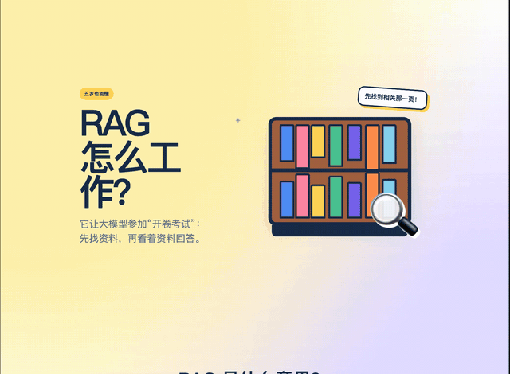
如果你在准备面试，碰到「如何提升 RAG 的召回率」，也可以让它做成网页，帮你把几种方法放在一起梳理。
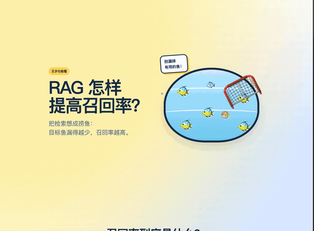
还有最近 AI 编程里经常提到的 Harness，看名字就有点让人摸不着头脑。交给 ELI5，它也能用图把这个概念讲明白。
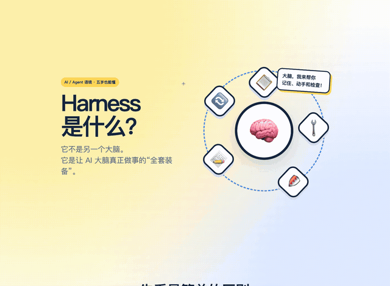
这些新名词原来要在不同资料里来回查，现在可以先让 ELI5 画一张图，把大概脉络弄懂，再去看更详细的资料。
对了，我还顺手拿它试了一个真实项目。
我打开了我们的《智能 OnCall Agent 项目》的源码，让 ELI5 解释这个项目是怎么工作的。
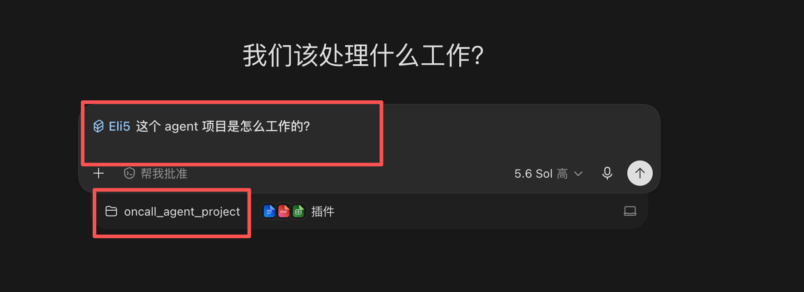
它先把项目的三种工作模式列了出来。
接着，我又问了它第二个问题，「这个项目用了哪些技术栈？」前端、后端、Agent、存储和容器，它都罗列得很清楚。
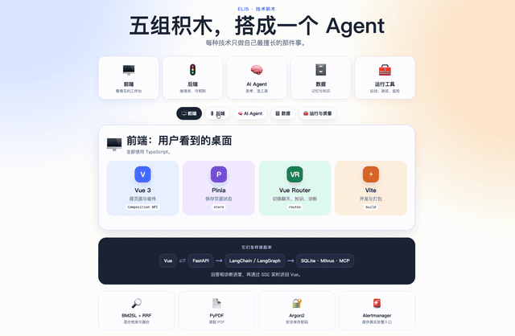
如果你经常要学新知识，或者突然接手一个陌生项目，ELI5 最有用的地方，就是先帮你跨过第一道门槛。
至少不会一上来就被满屏术语劝退。
写在最后
看到 ELI5 的提示词这么短，我马上想到之前分享过的另一个 Skill，grill-me。
你把一个还没想清楚的方案交给 AI，它会追着你往下问，一次只问一个问题，还会给出它的推荐答案。代码库里能找到的信息，它就自己去查。
听着像一套挺复杂的流程，对吧？
结果它的核心提示词也只有下面几句话。
Interview me relentlessly about every aspect of this plan
until we reach a shared understanding. Walk down each branch
of the design tree, resolving dependencies between decisions
one-by-one. For each question, provide your recommended answer.
Ask the questions one at a time, waiting for feedback on each
question before continuing. Asking multiple questions at once
is bewildering.
If a question can be answered by exploring the codebase,
explore the codebase instead.
翻译成中文，大概是这样。
毫不留情地追问我这个方案的每一个细节，直到我们达成共同理解。沿着设计树的每一条分支往下走，逐个解决各项决定之间的依赖关系。每次提问时，也给出你推荐的答案。
一次只问一个问题，等我回答后再继续。一次抛出多个问题会让人不知所措。
如果某个问题能通过查看代码库找到答案，那就自己查看代码库，不要再问我。
核心提示词就这几句话。
它没写先做什么、再做什么，只给 AI 定了一个目标，把方案问清楚。然后补了两条规矩，一次只问一个，能自己查的就自己查。
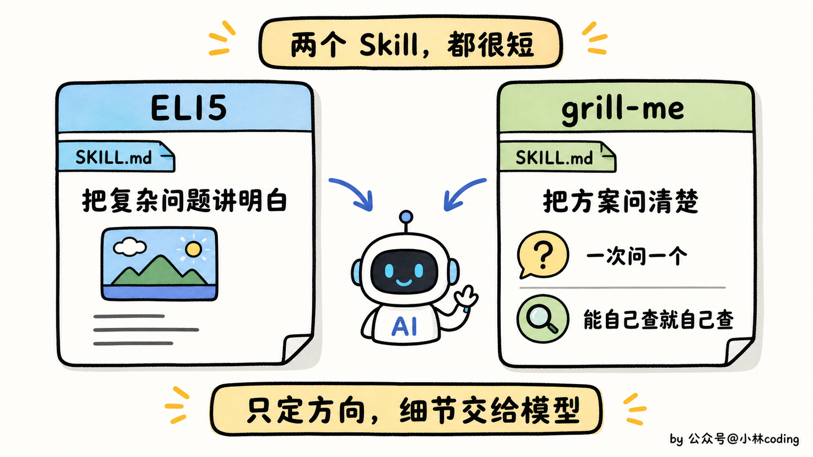
ELI5 也是这个思路。
把复杂问题讲明白，这是目标。具体画什么图、用什么比喻、从哪里开始讲，交给模型自己判断。
我觉得这两个 Skill 有意思的地方就在这里。它们没有把 AI 限在一套固定流程里，只给了一个方向和几条关键规则。
模型越强，自己能补出来的细节越多，同一个 Skill 用起来也会越顺。
有一种大道至简的感觉了。